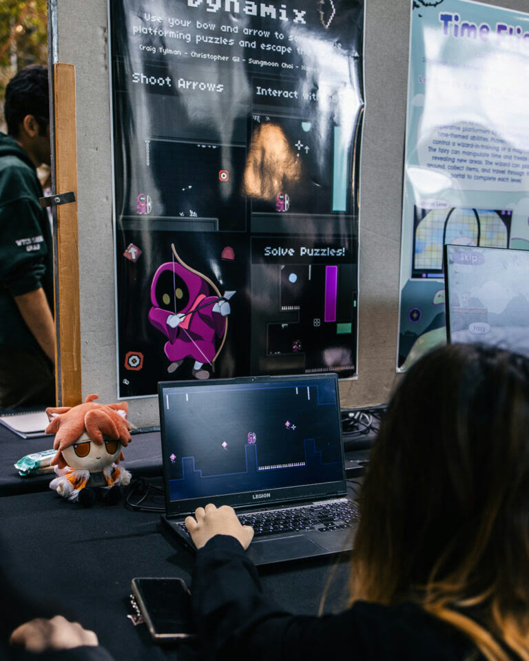

The idea
The player wakes in a dungeon with a bow and arrow. Shooting objects changes the room, turning aim, movement, and experimentation into the way to discover a path forward.
Game development / Unity & C#
One bow. A dungeon full of possibilities.
A 2D puzzle platformer where arrows are tools for changing the environment. I worked on gameplay and object interactions in a four-person team, then helped bring the game to players.
See it in action
Recorded gameplay · Audio included
01 / The short version
The player wakes in a dungeon with a bow and arrow. Shooting objects changes the room, turning aim, movement, and experimentation into the way to discover a path forward.
I developed custom C# scripts for movement and physics behavior, helped build arrow-driven object interactions, and coordinated the poster, showcase presentation, and itch.io page.
Our team released 11 levels for browser and Windows play and presented the game at the Queen's Creative Computing Showcase. The itch.io page attracted more than 600 visits.
02 / Gameplay systems
Player movement and physics scripts support jumping between platforms, avoiding hazards, and positioning for the next shot.
Targets, magnets, barriers, and other objects respond to arrows, giving players a way to manipulate the environment and solve puzzles.
Rooms combine movement, timing, and precise aim. New interactions build on earlier ones as players progress through the dungeon.
03 / From build to players
We presented Arrow Dynamix at the 2024 Queen's Creative Computing Showcase, where visitors could play the game, ask questions, and try to escape the dungeon.
Alongside development, I coordinated the game's marketing and presentation, including the printed poster and itch.io page.
View the Queen's showcase coverage
04 / The team
Developed with Craig Tylman, Xavier Awadalla, and Sungmoon Choi. My work spanned gameplay development, marketing, and presentation.
Music by Kevin MacLeod via Incompetech.
Play in your browser or download for Windows